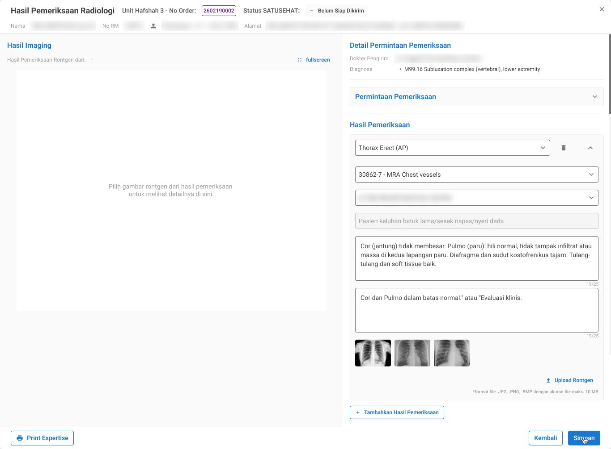
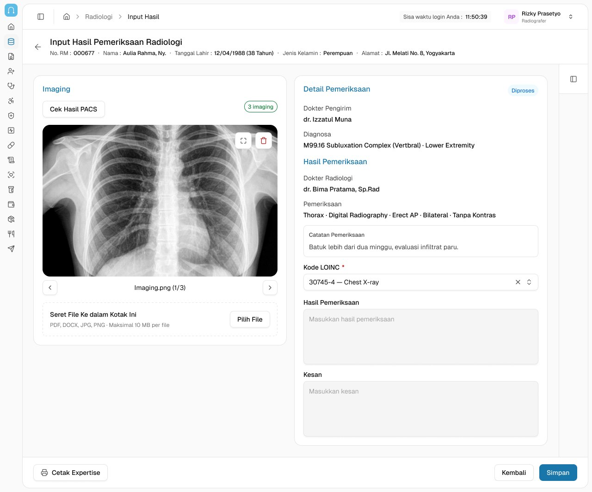
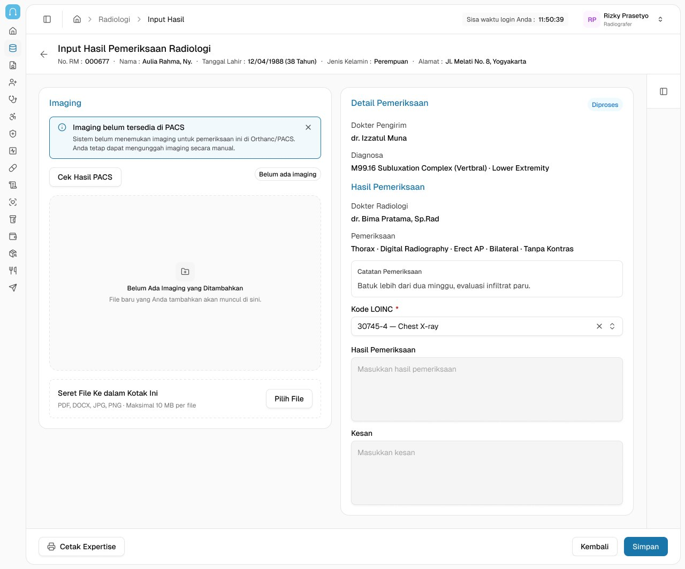
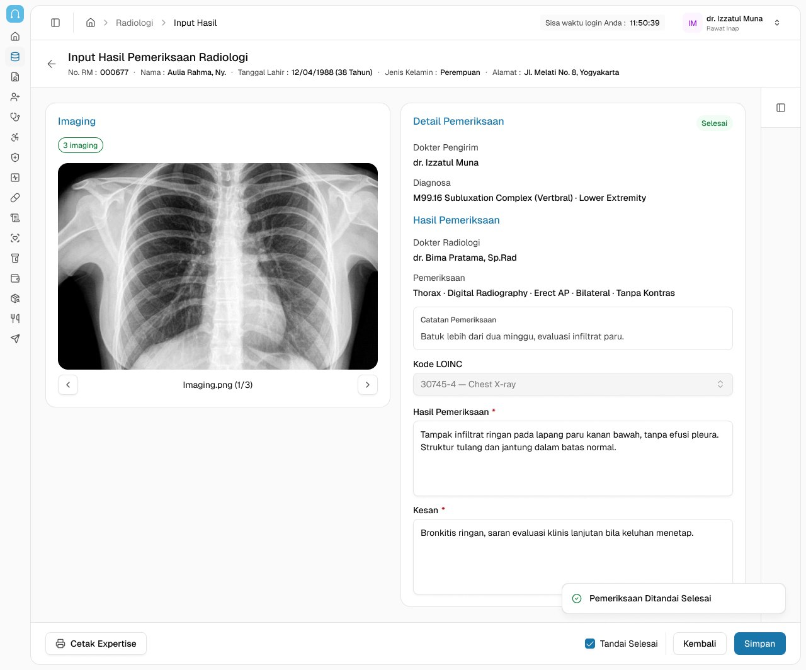
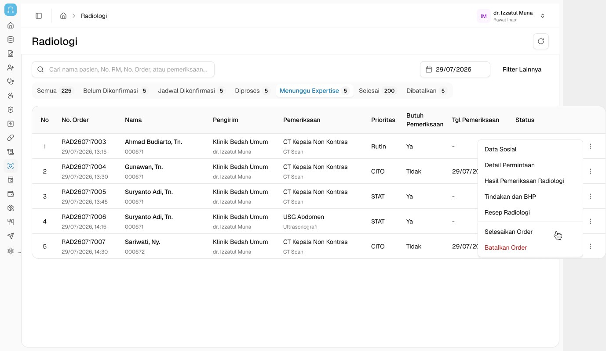

My first project designing alongside AI: a radiology results page built from scratch.
Internal hospital system, so there is no public link. Screens use dummy patient data.
On Neurovi’s radiology results page, radiographers add the images and radiologists write the findings and impression. V1 handled a whole order as one block. I designed the new page from scratch, in one week.

The team connected AI to Figma through MCP. I handed it the slow, repetitive parts of the work, so my time went into the decisions that needed a designer.



I helped build the design system and wrote its design patterns. They became the reference for everyone who touched Neurovi, people and AI alike.
Radiologists open the module and see their queue right away.

The radiographer checks PACS from the order. If the images aren’t there yet, manual upload stays open.
Doctors need yesterday’s image next to today’s. My first answer hid the history in a short list under the form. So I rebuilt it.
“A clear design system is what lets a team, and AI, move fast without losing consistency.”
And the history view taught me to test a design against the real task. Doctors needed to compare results, not just see that they existed.
— EldaMy first project designing alongside AI: a radiology results page built from scratch.
On Neurovi’s radiology results page, radiographers add the images and radiologists write the findings and impression. V1 handled a whole order as one block. I designed the new page from scratch, in one week.
The team connected AI to Figma through MCP. I handed it the slow, repetitive parts of the work, so my time went into the decisions that needed a designer.
I helped build the design system and wrote its design patterns. They became the reference for everyone who touched Neurovi, people and AI alike.
Radiologists open the module and see their queue right away.
The radiographer checks PACS from the order. If the images aren’t there yet, manual upload stays open.
Doctors need yesterday’s image next to today’s. My first answer hid the history in a short list under the form. So I rebuilt it.
“A clear design system is what lets a team, and AI, move fast without losing consistency.”
And the history view taught me to test a design against the real task. Doctors needed to compare results, not just see that they existed.
— Elda